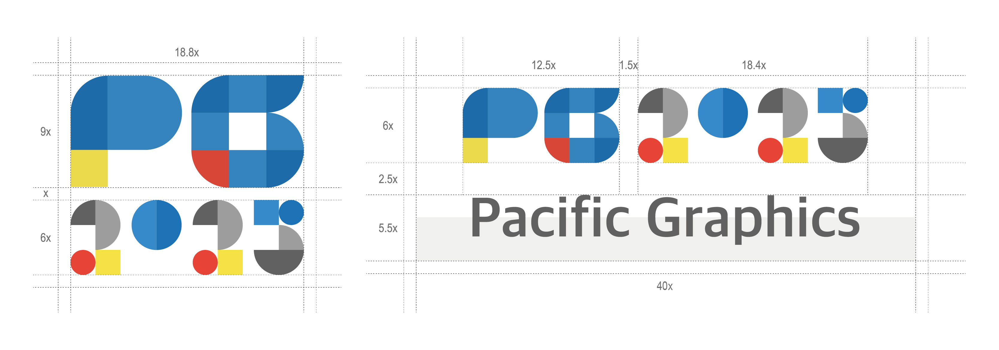
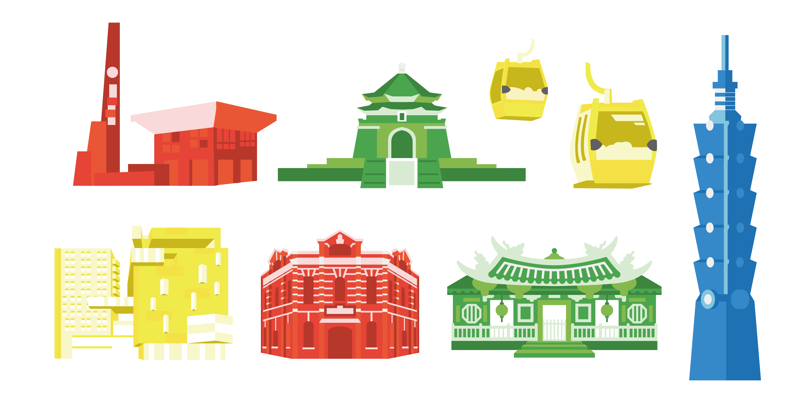
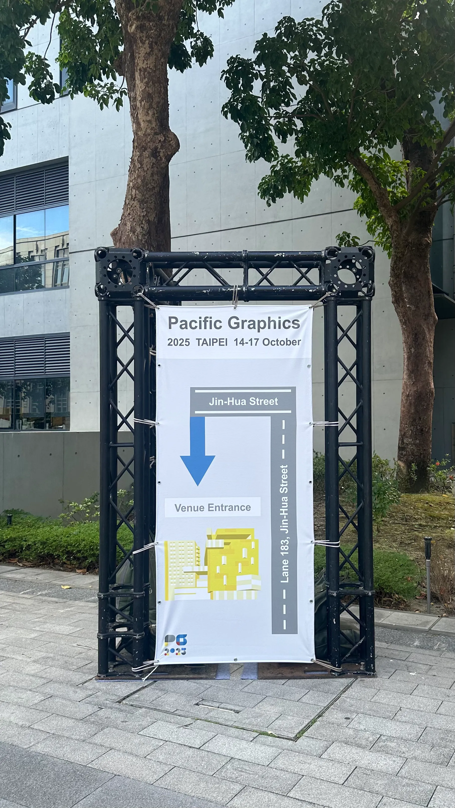
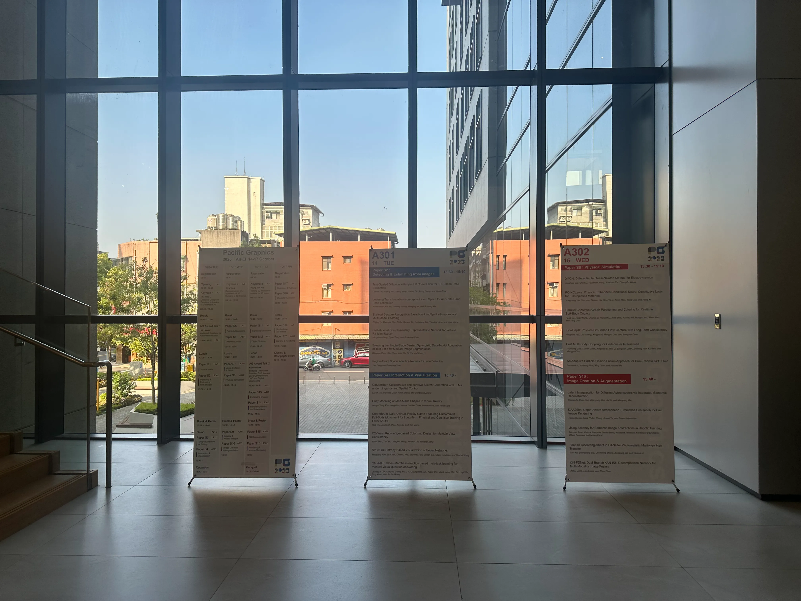
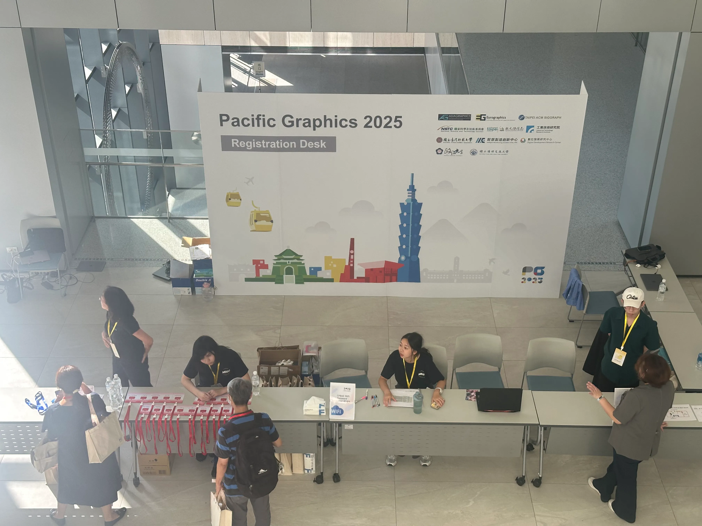
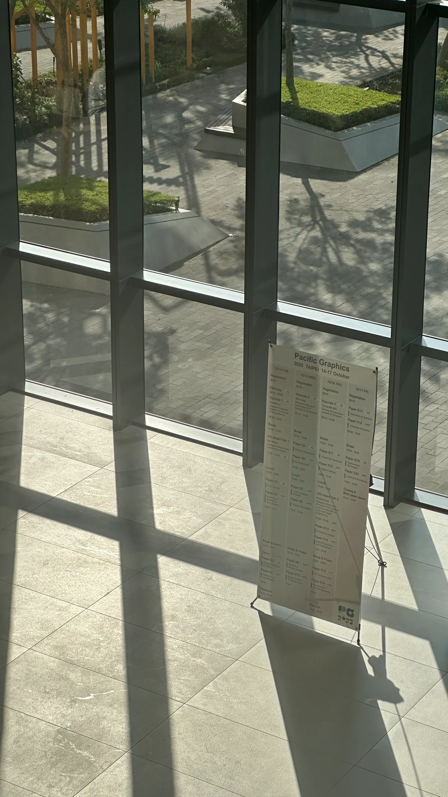
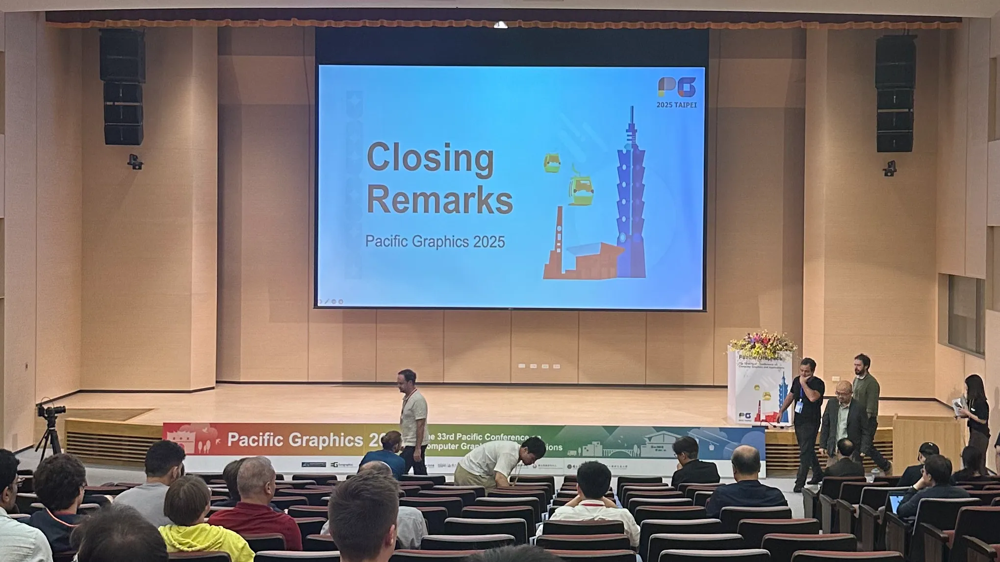

Design Concept
From Pixels to Place
Pacific Graphics is an international conference in computer graphics and visualization.
The 2025 edition is hosted by National Chengchi University in Taiwan.
This project focuses on creating a visual identity that reflects both the spirit of computer graphics and the
cultural context of Taiwan.
Using modular "building blocks," simple geometric shapes are combined to construct the conference logotype and
graphic system.
The concept reflects how computer graphics originates from fundamental units—points and pixels—and gradually
builds complex visual worlds.
The colorful elements highlight the interdisciplinary nature of computer graphics, bridging technology and
artistic expression while creating a lively visual identity for the conference.
LOGO Design

The logotype is constructed from modular geometric components.
Rounded rectangles, circles, and semicircles are combined to form the characters "PG 2025," creating a playful yet
structured visual language.
The colorful shapes represent the interdisciplinary nature of computer graphics, bridging technology, mathematics,
and visual creativity.
Visual Identity System
Beyond the logo, the identity extends into a cohesive visual language built around a consistent color palette and
geometric illustration style. This approach allows various graphic elements to coexist within the same visual
identity while maintaining visual unity.
Color Plan
A Color System Inspired by the RGB Foundation of Computer Graphics and the Playful Modular Logic of Building
Blocks
Red, green, and blue reference the technological foundation of computer graphics, while yellow was
introduced as
an additional color to expand the visual system and enhance its vibrancy. Neutral gray tones are also
incorporated
to provide visual balance and allow the brighter colors to stand out.
Each color is further extended into tonal variations, enabling flexible yet consistent applications across
illustrations, signage, and digital materials.

Since the conference is hosted in Taiwan, a series of illustrations featuring iconic Taiwanese landmarks were
created. In addition to well-known landmarks such as Taipei 101, Chiang Kai-shek Memorial Hall, Ximending Red
House, and Longshan Temple, the illustrations also include the main gate of National Chengchi University and the
NCCU Public Enterprise Center, where the conference takes place, as well as the Maokong Gondola, a local cultural
attraction near the campus.
Using the same flat geometric style and color palette, these illustrations integrate naturally into the conference
branding while highlighting both the cultural context of Taiwan and the specific location of the event.
Applications
The visual identity was applied across a wide range of conference materials, including digital platforms,
environmental graphics, and merchandise.
From the conference website and presentation templates to venue signage, stage visuals, and souvenirs, the modular
system ensures visual consistency while adapting to different formats.
Digital - Website
Merchandise
To extend the conference identity into physical objects, a series of merchandise
items were designed for Pacific Graphics 2025. The products
continue the visual language of the identity, translating the geometric and minimal aesthetic into everyday
objects.
The tote bag features contrasting red and green stitching details that subtly echo the visual concept.
Both the magnetic notebook clip and the tote bag were sourced from
Taiwanese brands, reflecting a connection to local design and manufacturing.
Instead of producing a traditional notebook, a reusable magnetic notebook clip was selected.
The clip allows participants to refill and reuse their own paper, extending the product's lifespan beyond the
conference.
Environmental




